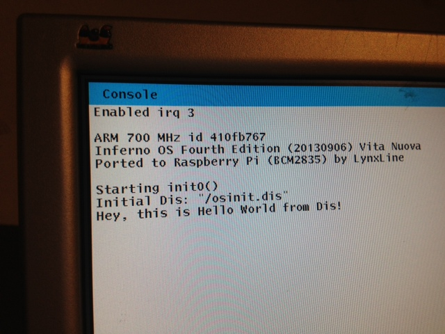

Before the Lab the development was going in total darkness…, um I meant using serial ftdi usb cable. But time comes to have a light!, no, a screen. Amazingly it wasn’t so complicated. Yes, we just used codes from 9pi project (thanks to Richard Miller). Our expected result is:

To achieve we need first to expand our “rpi” configuration and add draw and screen to dev section, tk draw memlayer memdraw into the lib section and draw and tk to mod:
1dev
2 root
3 cons
4 env
5 mnt
6 pipe
7 prog
8 srv
9 dup
10 uart
11 draw screen
12
13lib
14 interp
15 tk
16 draw
17 memlayer
18 memdraw
19 sec
20 math
21 kern
22
23mod
24 math
25 sys
26 draw
27 tk
28
29port
30 alarm
31 alloc
32 allocb
33 chan
34 dev
35 dial
36 dis
37 discall
38 exception
39 exportfs
40 inferno
41 latin1
42 mul64fract
43 nocache
44 nodynld
45 parse
46 pgrp
47 print
48 proc
49 qio
50 qlock
51 random
52 sysfile
53 taslock
54 tod
55 xalloc
56
57code
58 int kernel_pool_pcnt = 10;
59 int main_pool_pcnt = 40;
60 int heap_pool_pcnt = 20;
61 int image_pool_pcnt = 40;
62 int cflag = 0;
63
64 int consoleprint = 1;
65 int redirectconsole = 1;
66 char debug_keys = 1;
67 int panicreset = 0;
68
69init
70 rpiinit
71
72root
73 /chan /
74 /dev /
75 /dis /
76 /env /
77 /fd /
78 /net /
79 /prog /
80 /dis/lib
81 /dis/disk
82 /osinit.dis
We add from 9pi and have slight modifications of vcore.c and screen.c. Very good that Inferno and Plan9 have almost common codebase.
Also we add screeninit() just after poolsizeinit() in main(). All other changes are mostly polishing to fit imported sources.
What is very good about this Lab is that there is no more real need to have USB-FTDI cable connected, all debug messages and some indications can come just to our connected display! So if there anybody else would like to join Inferno OS porting to RPI, it became much simpler because no more need for specialized hardware.
FILES: